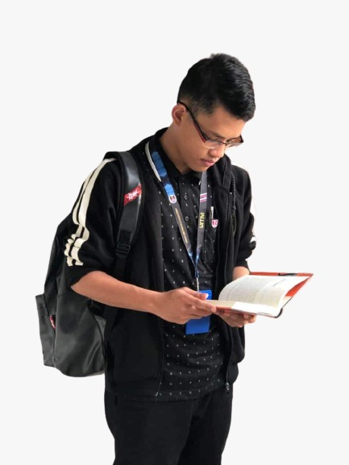

| Name: | Muhammad Nabil Aiman bin Azhar |
|---|---|
| Age: | 20 |
| Date of Birth: | 14 June 2000 |
| Place of Birth: | Ipoh, Perak, Malaysia |
| Tel. No: | 019 4972423 |
| Citizenship: | Malaysia |
| Religion: | Islam |
| Name of Father: | Azhar bin Haron |
| Name of Mother: | Hayati binti Hassan |
| Number of Siblings: | 3 |